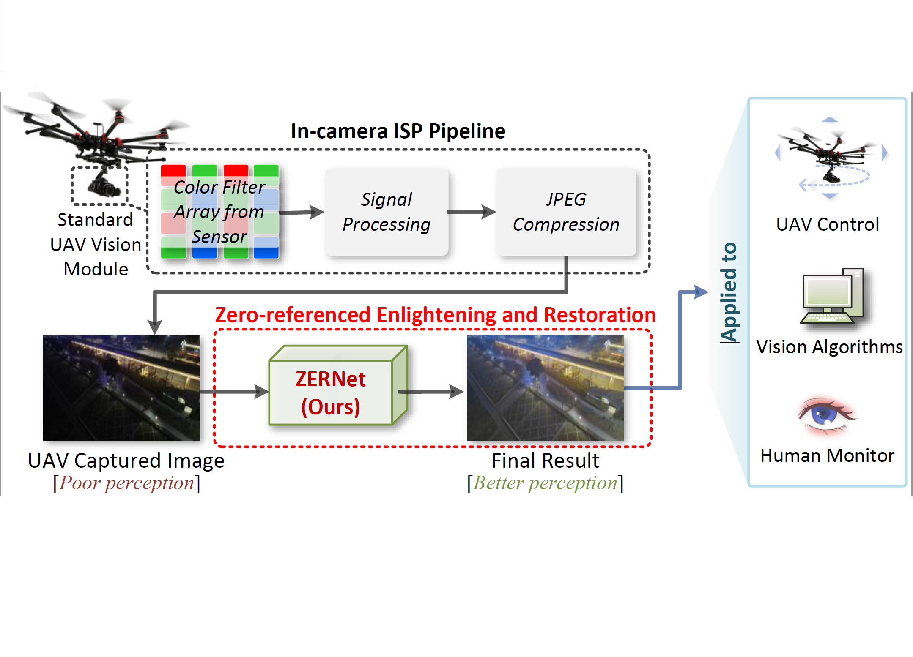
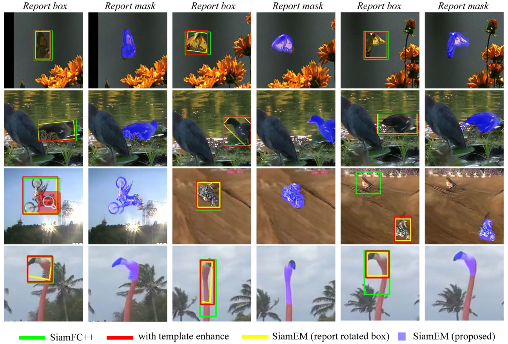

|
Yuezhou Li
Email /
Google Scholar /
Github /
dblp
I am a Ph.D candidate at Fujian Provincial Key Laboratory of Networking Computing and Intelligent Information Processing, College of Computer and Data Science, Fuzhou University. My research interests are visual tracking, low-light image/video enhancement, deep learning and computer vision.
|
|
|
Perceptual Decoupling with Heterogeneous Auxiliary Tasks for Joint Low-Light Image Enhancement and Deblurring
Yuezhou Li, Rui Xu, Yuzhen Niu✉, Wenzhong Guo, Tiesong Zhao.
IEEE Transactions on Multimedia, vol.26, pp. 6663 - 6675, 2024.
Solving multiple image degradations.
|
|

|
Zero-referenced Enlightening and Restoration for UAV Nighttime Vision
Yuezhou Li, Yuzhen Niu✉, Rui Xu, Yuqi He.
IEEE Geoscience and Remote Sensing Letters, vol. 21, NO.8002105, 2024.
[supplymental doc]
|
|
|
Zero-referenced Low-light Image Enhancement with Adaptive Filter Network
Yuezhou Li, Yuzhen Niu✉, Rui Xu, Yuzhong Chen.
Engineering Applications of Artificial Intelligence, vol. 124, NO.106611 2023.
A lightweight model for enlightening dark images with no GT training.
|
|
|
Efficient Encoder-Decoder Network with Estimated Direction for SAR Ship Detection
Yuzhen Niu, Yuezhou Li, Jiangyi Huang, Yuzhong Chen✉.
IEEE Geoscience and Remote Sensing Letters, vol. 19, NO.4504405, 2022.
[supplymental doc]
|
|
|
Learning Deep Convolutional Descriptor Aggregation for Efficient Visual
Tracking
Xiao Ke*, Yuezhou Li*(co-first author), Wenzhong Guo✉, Yanyan Huang.
Neural Computing and Applications, vol. 34, pp. 3745–3765, 2022.
[project page]
/
[supplymental doc]
/
[raw results]
|
|

|
Template Enhancement and Mask Generation for Siamese Tracking
Xiao Ke, Yuezhou Li, Yu Ye, Wenzhong Guo✉.
IEEE Signal Processing Letters. vol. 28, pp. 279-283, 2021.
[raw results]
|
|
|
Visual Object Tracking VOT2020 Challenge
ECCV2020 Workshops. Glasgow, UK, Aug-8th, 2020.
SiamEM: Ranked 18/37 in baseline challenge.
Yuezhou Li✉, Yu Ye, Xiao Ke
Co-Authored: The Eighth Visual Object Tracking VOT2020 Challenge Results. in Proceedings of the European Conference on Computer
Vision Workshops, 2020.
|
|
|
Visual Object Tracking VOT2021 Challenge
ICCV2021 Workshops. Montreal, Canada, Oct-16th, 2021.
SiamEM_R: Ranked 19/53 in real-time (RT) challenge.
Yuezhou Li✉, Yu Ye, Xiao Ke, Yanyan Huang, Yuzhen Niu
Co-Authored: The Ninth Visual Object Tracking VOT2021 Challenge Results. in Proceedings of the IEEE/CVF
International Conference on Computer Vision Workshops, 2021.
|
|